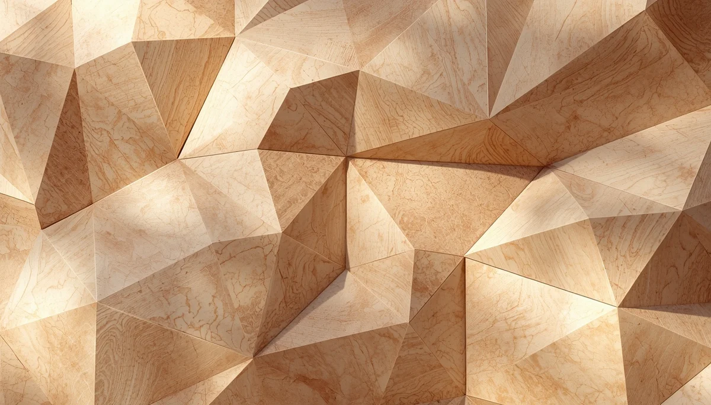

Anatomía en movimiento y tono muscular
El esqueleto infantil necesita de un sistema muscular tonificado pero flexible para sostenerse correctamente contra la fuerza de la gravedad. Lejos de requerir una quietud rígida, la musculatura de la espalda y el tronco se fortalece a través del juego activo, la variedad de movimientos y la alternancia de posturas a lo largo del día.
Fuerza, flexibilidad y equilibrio corporal
Una buena higiene postural depende directamente de la sinergia entre músculos abdominales, lumbares y dorsales. Cuando los niños pasan muchas horas inactivos, estos grupos musculares pierden su capacidad de sostén óptimo, favoreciendo posturas colapsadas. Fomentar juegos de suelo, trepar y correr ayuda a mantener este tono muscular de manera orgánica.
El papel del movimiento frente a la inmovilidad
El cuerpo humano está diseñado para el desplazamiento. Forzar a un niño a mantener una postura estática durante periodos prolongados resulta contraproducente para su fisiología. Integrar micropausas de movimiento protege la salud de sus discos vertebrales y previene la fatiga crónica.
"La mejor armadura para la espalda infantil es el movimiento libre, variado y constante."
Sustentar el crecimiento desde la anatomía natural
Comprender cómo operan los músculos y las articulaciones en la infancia nos encamina hacia una prevención activa y respetuosa con sus necesidades biológicas.
➔ Volver al índice de Higiene Postural